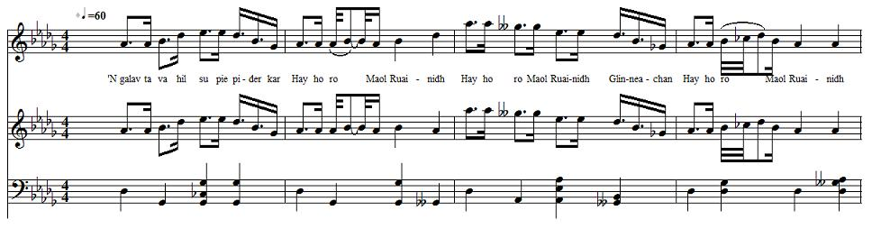

Maol Ruainidh Glinneachan
Mull of the Reddish Glens - Le promontoire des Glens Rouges
A cradle song for Prince Charles
Berceuse pour le Prince Charles
Author unknown
As sung by Rev. Norman McDonald and recorded by James Ross for the School of Scottish Studies in June 1956Tune - Mélodie
"Maol Ruainidh Glinneachan"
Sequenced by Christian Souchon

|
To the tune:
The sound background to this page is the MIDI transcription of the soundtrack record in the School of Scottish Studies. The date of record is June 1956; there is no information about the place of recording. The contributor is the Reverend Norman McDonald (1904 - 1978), minister at Valtos on the Island Skye. The reporter is James Ross. Permanent link: www.tobarandualchais.co.uk/fullrecord/70645/1 The tune is pentatonic (but for a note). Here is a (rough) attempt at phonetic transcription of the lyrics: 1. 'N galav ta va hil su pie pider kar Hi ho ro Maol Ruainidh Hi ho ro Maol Ruainidh Glinneachan Hi haro Maol Ruainidh 2. Ho piam malak sta c'hot minöklé 3. Ho pivias ta c'hot tanyölé Summary of the lyrics "This is a cradle song. The contributor tells the story and then sings the song. When Prince Charles Edward Stuart was a fugitive, he came to Lochaber. A carpenter made a large cradle, and it was put in a house where the Prince was hiding. When the redcoats came, he was put in the cradle and the woman of the house sang this lullaby to him. When the soldiers failed to see the prince, they went away." At the same site, a similar lullaby, also titled "Maol Ruainidh Ghlinneachan" is summed up as "A song by a fairy to an unattended child". Source:www.tobarandualchais.co.uk/gd/fullrecord/70645/1 |
A propos de la mélodie:
Le fond sonore de cette page est la transcription MIDI d'un enregistrement phonographique conservé par la School of Scottish Studies. Cet enregistrement a été réalisé en Juin 1956, le lieu n'est pas indiqué. Le chanteur est le Rév. Norman McDonald (1904 - 1978), Pasteur de Valtos dur l'Île de Skye. L'enquêteur est James Ross. On trouvera ce document à cette adresse: www.tobarandualchais.co.uk/fullrecord/70645/1 La mélodie est pentatonique (sauf une note). Voici une tentative (approximative) de transcription phonétique des paroles: 1. 'N galav ta va hil su pie pider kar Hay ho ro Maol Ruainidh Hay ho ro Maol Ruainidh Glinneachan Hay haro Maol Ruainidh 2. Ho piam malak sta c'hot minöklé 3. Ho pivias ta c'hot tanyölé Résumé des paroles "Il s'agit d'une berceuse. Le chanteur commence par raconter l'histoire et conclut par le chant. Lorsque le Prince Charles Edward Stuart était poursuivi par les troupes gouvernementales, il passa par Lochaber. Un menuisier lui fabriqua un grand berceau qu'on installa dans une maison où le Prince avait trouvé refuge. Quand les Habits rouges se présentèrent, on le cacha dans le berceau et la dame de la maison lui chanta cette berceuse. N'ayant pas vu le Prince dans ce logis, les soldats s'en allèrent." Sur le même site, une berceuse très ressemblante, dont le titre est aussi "Maol Ruainidh Ghlinneachan" est décrite ainsi: "Chant d'une fée à un enfant laissé sans surveillance". Source: www.tobarandualchais.co.uk/gd/fullrecord/70645/1 |